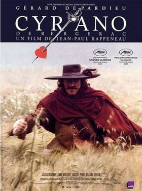
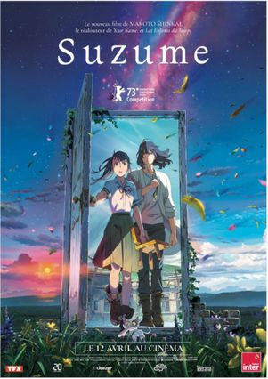

Inspirations et Références
🎬 Origine du projet
Ce projet s'est nourri de multiples influences, issues aussi bien de l'univers des comédies musicales que de la littérature, du cinéma ou encore de l'animation.
Comédies Musicales
- Le Moulin Rouge & Grease - Dramaturgie, mise en scène et scénographie
- West Side Story - Tensions entre groupes rivaux et enjeux culturels
Cinéma & Littérature
- Le Cercle des poètes disparus - Briser les codes, trouver sa propre voie
- Cyrano de Bergerac - Le génie des mots et la créativité verbale
- Star Wars - La découverte d'une force intime
Animation Japonaise
- Makoto Shinkai (Your Name, Suzume) - Poésie visuelle et introspection
- One Piece Red - La voix intérieure et le dialogue avec soi-même
Dimension Spirituelle
- Le Retour - Quêtes intérieures et parcours d'éveil
- Rencontre avec la Splendeur des Lettres Hébraïques - Acceptation de ses peurs et émotions
🎵 Style Musical
Le style musical s'inspire largement de l'univers culturel des jeunes :
RAP
Énergie urbaine et urgence des situations
SLAM
Poésie directe où chaque mot résonne
POP / J-POP
Univers manga et Japan animation
LYRIQUE
Référence à "Butterfly" de Puccini
🎬 Galerie d'Inspirations

Moulin Rouge
Spectacle total, transitions explosives

Grease
Dynamisme et changements de tableaux

West Side Story
Tensions entre groupes rivaux

Le Cercle des Poètes Disparus
Casser les codes, trouver sa voie

Cyrano de Bergerac
Le génie des mots

Star Wars
La force intérieure

Suzume
Poésie visuelle, émotions pures

Your Name
Introspection et connexion

One Piece Red
La voix intérieure, dialogue avec soi

Madama Butterfly
Référence lyrique, Puccini